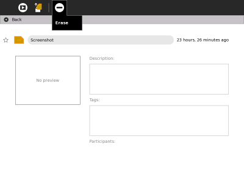

| Réparations | Index | Charger la batterie |
Vous disposez d'un espace limité pour stocker vos fichiers. Lorsque votre ordinateur aura utilisé trop d'espace de stockage, vous devrez donc effacer certains fichiers via l'Activité Journal.
Pour libérer de l'espace pour de nouveaux fichiers, suivez ces étapes:
3. Cliquez sur le fichier puis sur la touche Effacer (signe moins) afin d'effacer le fichier.

| Réparations | Index | Charger la batterie |